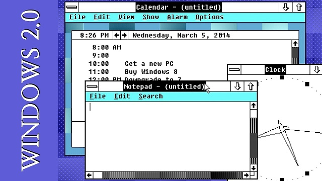

- Introdução ao SoftICE
- História do Windows - parte 2.0
- Google shortcuts
- Precedence difference
- Desejo insano de programar no kernel
- What happens inside the sizeof operator
- Como ser um melhor desenvolvedor nos próximos seis meses
- Antidebug: interpretação baseada em exceção (parte 1)
- C++0x parcial no novo GCC 4.3
- Movendo o cursor do mouse com o teclado
- C and C++ Operators Precedence Table
# Introdução ao SoftICE
Caloni, 2007-07-02 <computer> [up] [copy]O que acontece quando você precisa depurar um programa e não tem o Visual Studio instalado na máquina onde o problema está ocorrendo? Ora, para isso que existe o Remote Debugging. Eu uso direto. Você só precisa rodar um pequeno programa na máquina que vai ser depurada e abrir uma porta ou duas. O resto o Visual Studio da máquina que vai depurar faz.
Tudo bem, mas e se estamos falando de depuração em kernel mode? Bem, nesse caso o mais indicado é o nosso já conhecido WinDbg. Só precisamos de um cabo serial, firewire ou USB conectando as duas máquinas.
Mas a vida pode ser complicada às vezes. O WinDbg em versões antigas até rodava em plataforma 9x (95/98/ME), mas agora já não roda mais. Felizmente eu mantenho uma versão das antigonas, só para garantir. Só que ele rodava apenas para depurar em user mode, o que de qualquer forma não seria útil nesse caso.
Existe uma ferramenta de depuração no DDK do Windows 98 chamada WDEB386. Sua existência está documentada no próprio DDK. Funciona similarmente ao WinDbg, ou seja, o depurador em parte roda na máquina depurada e em parte na máquina que depura, e ambas são conectadas por um cabo serial. Teoricamente essa ferramenta serviria para depurar o kernel dos sistemas 9x, mas na maioria das vezes tive problemas com ela. Não que nunca tenha funcionado. Até já consegui essa proeza uma vez depois de muito ler a documentação e resolver uma série de problemas que não estavam documentados. Se você leitor quiser tentar a sorte, vá em frente.
Para piorar as coisas, existe mais um último problema: a máquina não está ao alcance de um cabo serial. Para esse último caso talvez fosse a hora de chamar um produto não-Microsoft que dá conta do recado muito bem: o SoftICE.
O SoftICE é um depurador de kernel e user mode que é instalado na própria máquina depurada. Ou seja, ele não precisa de uma segunda máquina só para rodar o depurador ou parte dele. Funciona no MS-DOS (versão 16 bits), plataforma 9x e NT. Criado pela Numega, mais tarde foi comprado pela Compuware, que passou a vendê-lo como um pacote para desenvolvimento de drivers, o Driver Studio. No seu time de desenvolvimento passaram nomes consagrados como Matt Pietrek e Mark Russinovich.
Essa ferramenta teve seus dias de glória quando a maioria dos crackers a utilizava para quebrar a proteção de programas e do sistema operacional. Tanto foi famosa que foram desenvolvidas diversas técnicas para detectar se o SoftICE estava ativo na máquina, mais ou menos o equivalente das diversas técnicas atuais para detectar se um programa está sendo executado dentro de uma máquina virtual.
O SoftICE deve ser instalado na máquina do desenvolvedor para gerar os símbolos dos programas e na máquina que vai ser depurada para depurar. Isso quer dizer que ele não precisa ser ativado na máquina do desenvolvedor. Só precisamos usar uma ferramenta chamada Symbol Loader, responsável por gerar símbolos e empacotar os fontes para serem usados na máquina depurada.
Na hora de instalar, você tem três opções:
- Full installation: desenvolvimento e depuração; use se for desenvolver e depurar na mesma máquina.
- Host machine: apenas desenvolvimento; não serve para depuração.
- Target machine: depuração; instale essa opção na máquina de testes.
Após esse processo e a compilação do seu driver favorito podemos gerar os símbolos.
Infelizmente, o Driver Studio só traduz os símbolos corretamente até a versão 6 do Visual C++, ou seja, não inclui nenhuma das versões .NET do Visual Studio (2002/2003/2005+). A Compuware se negou a oferecer suporte para os novos compiladores, talvez até prevendo que o produto iria ser descontinuado em breve.
A geração de símbolos pode ser feita de modo gráfico pelo Symbol Loader ou pela linha de comando. As opções chamadas source e package são importantes para traduzir utilizando o código-fonte e empacotar esse código-fonte no arquivo gerado. Note que eu disse empacotar, o que significa que o fonte vai estar dentro do arquivo de símbolos. Portanto, se a licença do seu software é de código fechado, nunca se esqueça de apagar esse arquivo quando estiver na máquina de um cliente.
Se tudo der certo no final teremos dois arquivos a serem copiados para a máquina depurada. Depois de copiados e o driver instalado, insira pelo Symbol Loader o arquivo NMS na lista de símbolos a serem carregados no reboot. Após configurar o depurador como lhe aprouver basta reiniciar a máquina. Feito o reboot, existe uma tecla mágica que irá nos levar para o mundo da tela preta, o ambiente padrão do SoftICE: Ctrl+D.
A interface é divida em pseudo-janelas que ficam organizadas em camadas. Para exibir/esconder as janelas ou especificar o tamanho de uma delas usa-se o comando w. Aliás, basta começar a digitar um comando e o programa irá listar os comandos possíveis.
Com certeza existe um monte de coisas novas para aprender quando se troca de depurador. Mais uma vez, assim como o WinDbg, temos a opção de utilizar o sistema de janelas ou a linha de comando. Aqui vão algumas dicas importantes:
- Para mostrar a tela do SoftICE, Ctrl+D. Digite novamente e ela some e o sistema volta a rodar.
- Os nomes dos comandos se assemelham aos do WinDbg. Tente usá-los e sinta as diferenças.
- A ajuda do programa é muito boa e explica direitinho todos os detalhes do ambiente. Caso algo falhe, RTFM!
Essa parece ser uma introdução muito básica ao SoftICE. E na verdade é. Teremos outras oportunidades mais pra frente de usar esse poderoso depurador, principalmente naqueles casos onde um problema só acontece no Windows 95 Release A e sem rede. Isso não é tão incomum quanto parece.
# História do Windows - parte 2.0
Caloni, 2007-07-04 <computer> [up] [copy]Eu seu, eu sei. A maioria dos meus leitores odiou o tema [História do Windows] na era paleozóica. Porém, como eu disse na parte 1.0, estou apenas satisfazendo a outra parte de leitores que procurou no Google por esse tema e acabou caindo no meu antigo blog. Mas vejamos o lado bom: a partir da próxima versão iremos destrinchar a API do sistema, entendendo o porquê das coisas serem como elas são. No momento os deixo apenas com história, pois é desconhecido para mim como funcionavam os primeiros rabiscos do MS-DOS Shell, mais conhecido como Windows/386. Bom divertimento!
Assim, em 9 de dezembro de 1987, é lançado o aperfeiçoadíssimo Windows 2.0, que fez do PC um ambiente muito mais parecido com um computador Macintosh. O novo sistema possui ícones para representar programas e arquivos, fornece suporte para memória expandida e janelas que podem se sobrepor(!). Porém, ainda utilizava o modelo de memória do 8088 e portanto era limitado a 1 Megabyte, ainda que certas pessoas houvessem tido sucesso rodando o sistema em cima de outro multitarefa como DesqView.
A Apple, vendo a extrema semelhança entre seu sistema e o Windows, abriu um processo em 1988 alegando ter a Microsoft quebrado o acordo feito em 1985. A Microsoft se defendeu tendo o argumento que a licença lhe dava o direito do uso dessas características. Uma guerra judicial se arrastou por quatro anos. A Microsoft ganhou. Ao final, a Apple declarou que a Microsoft havia infligido 170 de seus copyrights. A corte judicial disse que o acordo de licença dava direito de uso da Microsoft de todos menos nove. Então a Microsoft alegou que os copyrights restantes não poderiam ser reinvidicados pela lei do copyright, já que a Apple pegou suas idéias da interface gráfica desenvolvida pela Xerox em seus computadores Star. Assim, um impresso de 01/06/93, disponível no Microsoft Timeline, resumiu a solução final:
"Microsoft announces that Judge Vaughn R. Walker of the U.S. District Court of Northern California ruled today in Microsoft's favor in the Apple vs. Microsoft and Hewlett-Packard copyright suit. The judge granted Microsoft's and Hewlett-Packard's motions to dismiss the last remaining copyright infringement claims against Microsoft Windows 2.03 and 3.0, as well as, the HP NewWave."
Uma outra frase resume o caminho trilhado pela empresa a partir de então:
"Microsoft become the top software vendor in 1988 and never looked back..." - Microsoft
Com o advento dos novos lançamentos da Intel, os processadores 80286 e 80386, o Windows acabou sendo atualizado duas vezes para aproveitar as novas características dos dois sistemas. E assim nasceram as versões 2.1.x do Windows, respectivamente conhecidas como Windows/286 e Windows/386.
A próxima versão do Windows é que vai alavancar as vendas da Microsoft de uma vez por todas. Veremos que boa parte da API que usamos hoje em dia já existia no Windows 3.0, e boa parte das peculiaridades que nos perseguem até hoje.
# Google shortcuts
Caloni, 2007-07-06 <english> [up] [copy]I love shortcuts. Since my very first years using computers, shortcuts had become my obsession. I research them through the time, collecting them, using them. For a long time I avoid myself from touching the mouse, trainning to remember all keystroke sequences I know.
I have nothing against using the mouse neither the people that do it. I'm just not very much enthusiastic in using mice. For sometime, I even believed that the cursor pointer was getting me annoyed, so I developed a program to get rid of it from the screen (using a shortcut, of course). But, one more time, I'm not againt its use, and I use it myself sometimes (when I need to).
Until some time ago the web was not so good for shortcut users. So came out Google, plenty of web applications supporting shortcuts and giving me a true reason to use webmail and web RSS reader without pressing constantly the tab key. But there was a lack for its web search engine. Fortunately, there WAS.
Even being in test, I began to use the new keyboard shortcuts in Google search, available in the Google Experimental Search website. Until now there is shortcuts for next result (J), previous result (K), opening the search (O or `<Enter>`) and putting the cursor in the search box (/). It is just like Gmail and Google Reader. I was so excited with the idea that I changed the Google search plugin inside Firefox by myself. And now I'm going to tell how to do it (note: Windows only).
To put Google search shortcuts inside Firefox probably your search plugin will be in one of these two folder bellow. Try one of them: %programfiles%, Mozilla Firefox, searchplugins or %appdata%, MozillaFirefoxProfiles, *.defaultsearchplugins. The search plugin file has the name google.xml and you can edit it using notepad or another simple text editor. Bellow is the point where you must insert the new line that will get the plugin able to show the shortcuts inside Google.
<Url type="text/html" method="GET" template="http://www.google.com/search">
<Param name="q" value="{searchTerms}"/>
<...>
<Param name="esrch" value="BetaShortcuts"/> <!-- Google Shortcuts Here -->
<!-- Dynamic parameters -->
<...>
</Url>
That's all. Now you can get all the best: the best search engine with shortcuts. How can we be even more productive?
# Precedence difference
Caloni, 2007-07-10 <computer> <ccpp> <english> [up] [copy]Once upon a time my old friend Kabloc wrote this little and "harmless" function in order to print the multiplication table:
#include <stdio.h>
int main()
{
int f1,f2,s=0;
for( f1 = 1; (f1 == 11 && s != 5) ? s=5, f1=0, putchar(10) : ( f1 <= 10 ) ? f1 = f1 : f1 = 12, f1 <= 11 ; f1++ )
for( f2 = 1 + s; f2 <= 5+s; f2++ ) printf("%dx%d=%d%c", f2, f1, f1 * f2, ( f2 == 5 + s ) ? 10 : 9);
return 0;
}
Despite the fact the result is a strong candidate to The International Obfuscated C Code Contest the Linux guys told him the code was not successful on GCC, and somewhere inside those four lines there was a non-standard piece of code.
Asked to solve the problem, given my congenital inclination to random subjects involving C++, I decided to fix the things up in my old-n-good Visual Studio 2003. Nonetheless, it compiles C source code as well. We just need to rename the file from .cpp to .c. It was doing this that I found the following compiler error:
error C2106: '=' : left operand must be l-value
That happens in the line 6, the first for line. In other words, a C source that compiles as C++ but gives us a lack of l-value error since compiled as pure C.
Thinking about the problem rather intuitively than rationally I imagined that could be some little difference in the precedence table. Keeping that in mind, wrested the standard papers for both languages and took a look at this reduced C++ table and C ANSI standard from 1989:
| C | C++ | | ---------------------- | ---------------------- | | [L2R] () [] -> . | () [] -> . [L2R] | | [R2L] ! ~ ++ -- | ! ~ ++ -- [R2L] | | [L2R] * / % | * / % [L2R] | | [L2R] + - | + - [L2R] | | [L2R] << >> | << >> [L2R] | | [L2R] < <= > >= | < <= > >= [L2R] | | [L2R] == != | == != [L2R] | | [L2R] & | & [L2R] | | [L2R] ^ | ^ [L2R] | | [L2R] \| | \| [L2R] | | [L2R] && | && [L2R] | | [L2R] \|\| | \|\| [L2R] | | [R2L] ?: | = += -= *= /= %= [R2L] | | [R2L] = += -= *= /= %= | ?: [L2R] | | [L2R] , | , [L2R] |
Besides some now less important details we can notice in the end of the table a inversion between the ternary operator and the attribution operator and, more importantly, the inversion of the evaluation order. In C, the ternary operator is evaluated from right to left (R2L), whilst in C++ from left to right (L2R), like the rest. This is going to shows us that, in line 6, the same expression has two different interpretations in each language.
In order to understand bit by bit the problem, let's disassemble the second part of that for:
( f1 == 11 && s != 5 ) ? s = 5, f1 = 0, putchar(10) : ( f1 <= 10 ) ? f1 = f1 : f1 = 12, f1 <= 11;
We have two ternary operators nestled. In accordance with C++ standard, the ternary operators have less precedence than the attribution operators and are evaluated from left to right. In other words, in first place all the atributions inside the expression are made before any ternary operator. After that, the first ternary operator is executed, followed by the second:
( ( f1 == 11 && s != 5 ) ? (s = 5), (f1 = 0), putchar(10) : ( f1 <= 10 ) ) ? (f1 = f1) : (f1 = 12), f1 <= 11;
Now let't take a look in C. In this language, different from C++, the ternary operators have more precedence than the attribution operators, and are executed from right to left. That means the first and last ternary operators are executed, ignoring the right attribution, and after that the first ternary operator is executed. Only after these two events the right attribution is evaluated:
( ( f1 == 11 && s != 5 ) ? s = 5, f1 = 0, putchar(10) : ( ( f1 <= 10 ) ? f1 = f1 : f1 ) ) = 12, f1 <= 11;
All this make us to see the attribution to 12 will be done on the first ternary operator result, which possible values could be from the putchar return or f1. Remember that the comma operator purpose outside function calls is to chain expressions, execute them and return the value from the rightmost expression:
s = 5, f1 = 0, putchar(10) // makes s equals 5, f1 equals 0 and returns the putchar call value. f1 = f1 : f1 // in both cases the returned value is the f1 variable
Well, the f1 variable is an integer. And putchar return as well. This is not going to break any type rule. However, breaks the attribution gold rule: "put an lvalue in the right side of an attribution".
f1 = 12; // right; nothing to say putchar(10) = 12; // woops! what's that? putchar doesn't return variable but a constant value
This finishes the long explanation about why that little insignificant error at the beginning of this article happened only in the C language. This is a perfect example of the little differences between these two languages. Perhaps do you use parenthesis like a crazy, and are not going to find this kind of problems inside your source code. Perhaps not.
# Desejo insano de programar no kernel
Caloni, 2007-07-12 essays> [up] [copy]Muitas vezes meus amigos (um em particular) me perguntam por que não me interesso em programar em kernel mode, como se isso fosse um objetivo a ser alcançado por qualquer programador em user mode. Bom, não é.
Claro que sempre me empenho em entender como o sistema funciona, nos menores detalhes e sempre que posso, o que nem sempre me leva para o kernel mode (entender como a CLR funciona, por exemplo). Posso até me considerar um ser privilegiado, já que trabalho com dois experts em kernel mode e .NET, respectivamente. Isso já faz algum tempo, e ambos possuem conhecimento e experiência necessários para sanar minhas dúvidas mais cruéis. Porém, uma coisa é o conhecimento da coisa. Outra coisa é a prática. E a teoria, como já dizia o Sr. Heldai, na prática é outra.
Existem também aqueles programadores que, entorpecidos pela idéia de que seu software deve ser o mais baixo nível possível porque... bem, porque ele faz coisas muito profundas (?), ou é muito avançado (??), ou talvez até porque ele precisa ser otimizado ao máximo. Baseados nessas premissas (???), antes mesmo de conhecer o sistema operacional e pesquisar o que ele tem a oferecer que já está disponível em user mode partem direto para a programação nua e crua, pelo simples motivo de ser legal ou na ilusão de ser a melhor maneira de se fazer as coisas sob qualquer circunstância.
Munidos de bons motivos para fazer drivers, o próximo passo seria então pedir ajuda desesperadamente (e urgentemente) em listas de discussões. Talvez esse seja o lugar menos apropriado para procurar por uma palavra amiga. Acompanhei por um tempo uma lista de kernel do Windows. Apenas para efeitos de descrição, o clima e a impressão com que fiquei de lá foi que os programadores em kernel não se dão muito ao trabalho de ajudar aqueles que estão perdidos no ring0. Então para que existe a lista? Aparentemente para aqueles que já sabem fazer o carro andar, já conhecem o motor e um pouco de mecânica dos fluidos.
Digamos que é uma cultura bem diferente do que estamos acostumados a vivenciar em user mode. Eles estão muito mais ocupados com problemas relacionados especificamente com o desenvolvimento de drivers, e não dúvidas bestas do tipo "como eu faria isso". Lá não se briga entre linguagens gerenciadas e não-gerenciadas (nem entre linguagens gerenciadas), mas entre linguagens C e C++. Lá não se ajuda a fazer aquelas "gambis" que tanto ajudam o programador na hora do sufoco, mas sim redirecionam os hereges para o desenvolvimento "politicamente correto" (siga a documentação e seja feliz).
Isso não é uma crítica destrutiva, apenas uma descrição narrativa. Nada que falo aqui é exagero ou blasfêmia. Podem perguntar para o meu amigo de kernel mode. Aliás, use o blog dele para aprender um pouco sobre o kernel.
O fato é que bons programadores são bons onde quer que eles estejam (e os ruins serão ruins em qualquer lugar). E ser um desenvolvedor de qualidade exige tempo, dedicação, paciência e estudo. Pode ser um designer usando Action Script ou um engenheiro da NASA projetando foguetes. Tanto faz. Fazer as coisas com qualidade sempre exigirá mais tempo do que gostaríamos de despender. Não é uma questão de ser mais difícil em kernel mode ou mais fácil em Javascript. É saber qual dos dois será necessário usar para atingir o nível de funcionalidade e qualidade que o projeto exige. O resto é preconceito.
# What happens inside the sizeof operator
Caloni, 2007-07-16 <computer> <ccpp> <english> [up] [copy]The question: how to get the size of a struct member without declaring it as a variable in memory? In pseudocode:
static const size_t FIELD_SIZE_MSGID = 15;
struct FEEDER_RECORD_HEADER
{
char MessageID[FIELD_SIZE_MSGID];
char MessageIndex[10];
};
// error C2143: syntax error : missing ')' before '.'
char MessageIndexBuffer[ sizeof( FEEDER_RECORD_HEADER.MessageIndex ) + 1 ];
// error C2070: '': illegal sizeof operand
char MessageIndexBuffer[ sizeof( FEEDER_RECORD_HEADER::MessageIndex ) + 1 ];
In this first try (even being a nice one) we can clearly see by instinct that the construction is not supposed to work. The compiler error is not even clear. The member access operator (the point sign) needs to have as its left some variable or constant of the same type of the struct. Since the operand is the type itself, there is no deal.
The second test is more feasible. Even the compiler can alert us. We have accessed the right member in the right struct but in the wrong way. As we're not using a static member or, in other words, a class variable, we can't access the member by scope. We need an object. But in order to have an object we are supposed to have to create one, and this is exactly what is not allowed in our solution.
This kind of problem reminds me about a curious feature inside the sizeof operator: it doesn't evaluate the expressions used as operands. How's that? Well, as the sizeof main purpose is to provide us the memory size filled by the expression, it simply doesn't make sense to execute the expression. We just need to note that the language we're talking about defends eficiency and clarity as main principles. If you want to execute the expression, we do it without using sizeof operator.
So, now we know that everything put inside a sizeof is not going to be executed in fact. It works somewhat like the c++ "dead zone": is the place where - talking about executable code - nothing runs. That means we can build a object inside sizeof that nothing is going to happen, except for the expression size. Let's look the resulting assembly:
sz = sizeof( (new FEEDER_RECORD_HEADER)->MessageID ); // this... mov dword ptr [sz], 0Fh ; ... is translated into this
Another way to do the same thing (for those who can't bear the use of operator new without a delete, seeing the code as a memory leak):
sz = sizeof( ((FEEDER_RECORD_HEADER*)0)->MessageID ); // this... mov dword ptr [sz], 0Fh ; ... is translated into this
Conclusion: the operator new is called and nothing happens. We got what we wanted. That shows us one more time that the little details built inside a language layout are only very important in the exact time we need them.
# Como ser um melhor desenvolvedor nos próximos seis meses
Caloni, 2007-07-18 [up] [copy]Graças ao meu amigo Thiago estive acompanhando uma série de posts de gente renomada sobre o tema deste artigo. Eles fazem parte de uma nova modalidade entre os blogueiros (pelo menos para mim) chamada de tagging. Funciona assim: você escreve sobre algo (por exemplo, "como ser um melhor cozinheiro em 6 meses") e manda uma tag para que outras pessoas também escrevam sobre o mesmo assunto, o que pode ser feito referenciando o sítio dessas pessoas.
Ainda não tive tempo de ler todos os artigos (nem vou ter, pela velocidade com que isso se espalha), mas acho que dá tempo de escrever um pouco sobre isso.
Acredito que nós, programadores, tentamos aprimorar nossos conhecimentos e nossas técnicas com o objetivo de enxergar os problemas do dia-a-dia de todos os ângulos e de encará-los e resolvê-los da melhor maneira possível. Quer dizer, nós achamos que é a melhor maneira possível. E exatamente por acharmos que tentamos melhorar sempre, em busca da inalcançável perfeição.
O problema existe quando nós, embriagados pela falsa crença de sabermos tudo (ou o suficiente), acreditamos realmente que estamos fazendo o melhor possível e que não há nem haverá maneira de melhorar. É lógico que sempre há. Melhor maneira de ver isso é pegar um código-fonte antigo e observar as mudanças de estilo. E nem precisa ser tão antigo assim. E nem precisa ser código. Pode ser uma idéia antiga de como implementar alguma coisa. A não ser que você seja um teimoso que quer fazer tudo em assembly verá que o que aprendemos ontem influencia nas decisões de amanhã.
Minha lista não é muito diferente da dos outros. Basicamente se resume em: ler livros e blogs, programar mais e pensar mais ainda. O importante é que já estou ciente das coisas que devo melhorar, e é nelas que devo me focar nos próximos 180 dias:
- Fazer um curso de memorização. Confesso que não ligava muito para isso e agora isso faz um diferença e tanto. Eu sei que hoje temos post-its e agendas, mas nada substitui a confiança que temos em nossa própria mente. E é frustrante ler um livro três meses atrás e não se lembrar de capítulos inteiros.
- Fazer um curso de leitura dinâmica. Minha velocidade na leitura é deplorável e eu sei disso. Minha vontade de ler sempre ultrapassa o ato (isso deve ter acontecido com alguns de vocês). Mas o objetivo não é apenas ler mais rápido. É ter foco. Ler e absorver. Não estou dizendo isso de livros de ficção, que para mim são um entretenimento prazeroso. São os livros técnicos que pertubam, e urgem pela minha atenção quando os estou lendo.
- Aprender o meu ritmo. Às vezes me impressiono com o meu descaso para comigo mesmo. Por exemplo, eu já sabia que "rendia" bem mais quando lia livros simultaneamente, e não em fila. Mas mesmo assim insistia em querer terminar um livro antes de começar o outro. O resultado? Aproveitamento 60%. Nada mau. Mas poderia ser bem melhor. Bastava seguir o método que melhor se adapte às minhas necessidades. E isso é o que eu chamo de aprender a si mesmo.
Agora que já passei pelo sofrimento de taguear nada como escolher minhas vítimas. Não conheço pessoalmente muitos blogueiros, mas pelo menos essa minha lista é fiel e sincera. Rodrigo Strauss, Fernando Roberto e Thiago Oliveira: o que vocês farão nos próximos seis meses para se tornarem melhores desenvolvedores (ainda)?
# Antidebug: interpretação baseada em exceção (parte 1)
Caloni, 2007-07-20 <computer> projects> [up] [copy]Um depurador utiliza breakpoints para "paralisar" momentaneamente a execução do programa sendo depurado. Para isso ele se utiliza de uma bem conhecida instrução conhecida como int 3. Essa instrução gera uma exceção -- exceção de breakpoint -- que é capturada pelo sistema operacional e repassada para o código de tratamento dessa exceção. Em programas sendo depurados esse código está localizado no depurador. Em programas "livres" esse código normalmente não existe e ao acontecer essa exceção o aplicativo simplesmente "capota".
A idéia principal na proteção baseada em exceção é tomarmos conta dessas exceções durante a execução do aplicativo. Fazendo isso podemos nos aproveitar desse fato e, no código responsável por tratar a exceção, executar o código protegido. A solução discutida aqui é parecido com um interpretador de scripts. Consiste basicamente de duas threads. A primeira thread lê uma seqüência de instruções e manda a segunda thread executá-las passo a passo. Para fazer isso a segunda thread usa um conjunto de pequenas funções com blocos de código bem definidos. Em pseudocódigo isso ficaria assim:
void Function1();
void Function2();
void Function3();
//...
void FunctionN();
void ExecThread()
{
while( true )
{
ExecFunction(funcNumber);
}
}
int Functions[] = {
3, 4, 1, 2, 34, 66, 982
};
int Start()
{
CreateThread(ExecThread);
for( 0 to size(Functions) )
{
ExecThreadToExecFunc(Function[i]);
}
return 0;
}
A proteção ainda não está aí. Mas fará parte intrínseca da thread de execução. Tudo que precisamos fazer é adicionar um tratamento de exceções e fazer chover ints 3. As exceções disparadas pela int 3 são capturadas por uma segunda função que antes de retornar o controle executa a próxima instrução enfileirada:
DWORD ExceptFilter()
{
ExecFunction(number);
// goes to except code
return EXCEPTION_EXECUTE_HANDLER;
}
void ExecThread()
{
while( true )
{
__try
{
// breakpoint exception
__asm int 3
// it stops the debugger
// if we have an attached
// debugger in the process
// or throws an exception
// if there is no one
}
__except( ExceptFilter() )
{
// does nothing
}
Sleep(someTime);
}
}
O algoritmo da thread de execução continua o mesmo. Só que o ponto onde cada instrução é executada depende do lançamento de uma exceção. Note que essa exceção tem que ocorrer para que a chamada da próxima instrução ocorra. Isso é fundamental, pois dessa forma ninguém pode simplesmente retirar o int 3 do código para evitar o lançamento da exceção. Se fizer isso, então mais nenhuma instrução será executada.
Na prática, se alguém tentar depurar um programa desse tipo vai ter que enfrentar dezenas ou centenas de lançamento de exceções até descobrir o que está acontecendo. Claro que, como em toda a proteção de software, ela não é definitiva; tem por função dificultar o trabalho de quem tenta entender o software. Isso não vai parar aqueles que são realmente bons no que fazem.
O preço pago por essa proteção fica na visibilidade e compreensão do código-fonte comprometidos pelo uso da técnica. A programação fica baseada em uma máquina de estados e as funções ficam limitadas a algum tipo de padronização no comportamento. Quando mais granular for o pseudoscript, ou seja, quanto menores forem os blocos de código contido nas minifunções, mais difícil de entender o código será.
Fiz um código de exemplo que recebe entrada por um prompt de comandos (update: perdi esse código) e mapeia a primeira palavra digitada para o índice de uma função que deve ser chamada. O resto da linha digitada é passado como parâmetro para essa função. A thread de interpretação lê a entrada do usuário e escreve em uma variável-string global, ao mesmo tempo que a thread de execução espera essa string ser preenchida para executar a ação.
Foi usado o pool dessa variável para o código ficar mais simples, mas o ideal seria algum tipo de sincronismo, como eventos, por exemplo.
O ponto forte da proteção é que a pessoa precisa entender o que está acontecendo para tomar alguma atitude inteligente para solucionar o "problema". O ponto fraco é que após entendido o problema a solução torna-se fácil de visualizar. Tão fácil que eu nem pretendo citar aqui.
Futuramente veremos uma maneira de tornar as coisas mais legíveis e usáveis no dia-a-dia de um programador de software de segurança.
# C++0x parcial no novo GCC 4.3
Caloni, 2007-07-24 <computer> <ccpp> [up] [copy]A nova versão do GCC implementa em caráter de teste algumas novas características da nova versão da linguagem C++, que será lançada ainda nesta década (provavelmente em 2009). As novas funcionalidades são empolgantes e já fazem parte do imaginário dos programadores C++ já há algum tempo.
Atualmente temos duas maneiras de fazer asserções: usando a função assert (assert.h) ou utilizando a diretiva do pré-processador #error. Nenhum desses dois serve para templates Para eles deverá ser definida a nova palavra-chave static_assert, que irá ser composta de dois parâmetros:
static_assert( expressão-constante, literal-em-cadeia );
Podemos usá-la tanto no lugar da função assert quanto da diretiva #error. Mas seu uso mais interessante é como limite para a instanciação de emplates
template<typename T> static_assert( sizeof(T) >= sizeof(int), "T is not big enough" )
Existem outros lugares onde esse novo comando pode ser usado. Para saber quando usá-lo, lembre-se que a verificação é feita durante a compilação, diferente do assert tradicional, que é chamada em tempo de execução.
Depois de todos esse anos o pré-processador sofrerá um upgrade. O objetivo é ser compatível com o novo padrão da linguagem C, o C99. A maior novidade fica por conta do número variável de parâmetros para macros. A linha abaixo resume tudo:
#define TRACE(format, ...) printf(format, __VA_ARGS__)
Ou seja, não será mais necessário usar o truque dos "parênteses duplos" em macros de log que formatam parâmetros.
Considero a mudança dos templates com parâmetros variáveis a mais interessante. Com ela será possível usar um número variável de parâmetros em templates. Basicamente isso permite que um dado template aceite um número variável de parâmetros e esses parâmetros sejam "expandidos" em inúmeras construções dentro do escopo desse template. Nada melhor para explicar que um exemplo, como o caso da herança múltipla. Imagine um template que precisa herdar de seus parâmetros, mas não quer especificar a quantidade:
template<typename... Bases> // quantidade definida pelo usuário
class MyTemplate : public Bases...
{
Outras pequenas correções também serão feitas para tornar a linguagem mais robusta:
- Referências para lvalue.
- Parâmetros default em funções-template.
- Problema do fecha-templates duplo (>>).
Podemos esperar por outras grandes mudanças que irão ocorrer nesse novo padrão? Não exatamente. As principais estarão na biblioteca C++, com a inclusão de diversas classes e funções do projeto Boost. O resto são pequenas correções e melhorias de uma linguagem que, cá entre nós, já está bem poderosa e complexa.
# Movendo o cursor do mouse com o teclado
Caloni, 2007-07-26 <computer> <projects> [up] [copy]Bom, vamos deixar de papo furado e "codar". Para essa primeira tentativa iremos desenvolver um programa que move o cursor do mouse quando pressionada uma tecla de atalho e voltar à sua posição original quando pressionada outra tecla.
Nota de desculpas: eu sei que estou sendo rabugento demais com o mouse. Já é o segundo artigo que escrevo falando como evitar o mouse e isso deve realmente irritar os fãs desse ponteirinho irritante.
Como eu já havia dito anteriormente, uso o mouse quando necessário. Quando ele não é necessário ele fica clicando inconscientemente no Windows Explorer, já que utilizo a configuração de clique único, onde as pastas e arquivos ficam selecionáveis apenas pousando o cursor sobre eles. Eu gosto dessa configuração, exceto pelo comportamento desagradável que ocorre quando mudo para a janela do Windows Explorer e meu mouse ganha vida própria, selecionando alguma pasta ou arquivo e mudando meu foco de seleção.
Portanto, o objetivo desse programa é simples e direto: mover o mouse para um canto enquanto eu uso meu teclado. Nada mais, nada menos. Para isso iremos registrar alguns atalhos globais no Windows. Para registrar atalhos globais no Windows utilizamos a função do Windows API RegisterHotKey e é o que estou usando no código. O importante aqui é saber que iremos ser avisados do pressionamento das teclas que registrarmos por meio dessa função através do loop de mensagens da thread que chamar a função.
Um loop de mensagens é a maneira definida pelo Windows para avisar as aplicações dos eventos que ocorrerem no sistema que são relevantes para as suas janelas. Teremos chance de observar isso mais vezes, mas por enquanto basta ter uma visão geral do fluxo de mensagens que ocorre quando digitarmos a nossa tecla de atalho.

O código não tem muitos segredos (mas eu não sei onde ele foi parar). Para registrar os atalhos, usamos a função RegisterHotKey. Para manipular os eventos usamos o tal loop de mensagens e manipulamos a mensagem WM_HOTKEY de acordo com a tecla pressionada. Para mover o mouse usamos a função SetCursorPos (e para armazenar a posição atual GetCursorPos). Por fim, para ler configurações de um .ini usamos a função GetPrivateProfileInt. Abaixo um exemplo desse arquivo texto:
[HideCursor] DisableX=600 DisableY=0
Você acha que os atalhos "WinKey + Del", "WinKey + Insert" e "WinKey + End" foram uma má escolha para essa função de esconder o mouse? Concordo. Fiz de propósito. Que tal customizar o programa para que as teclas sejam lidas do arquivo de configuração HideCursor.ini?
# C and C++ Operators Precedence Table
Caloni, 2007-07-30 <computer> <ccpp> <english> [up] [copy]Wanderley, your explanation about [why a program compiles in C++ and not in C] seems to me logic and correct, but gave me some doubts, because I always learned that the C and C++ operator precedence are the same thing. I checked out the Appendix A in the "C ++ - How To Program" (sixth edition) and the book table is equal to the C operators precedence table and it is different from the C++ precedence table presented by you in the article. I went to the internet and found out in two websites the table and both are equal to the book table:
- [Wikipedia]
- [CppPreference]
From where did you get the presented C++ table?
[]s,
[Márcio Andrey Oliveira]
Dear Márcio,
You have been my most productive reader ever. Besides having found the portability fail using static variables inside ifs, now you put in check the precedence table comparison between these two languages. In fact, some things were not so clear in that post. Let's clarify everything now (or at least try) using trustworthy sources, including the Wikipedia link sent to me.
The first doubt it's about the most basic principle: what is a precedence table? Well, it is what defines, amount a set of concurrent operations in a language, which will be the evaluation order. In other words, what cames first, what cames next, etc. Through this table is possible to know all the language facts, as the fact that the multiplication operators are evaluated before the addition operators.
This way, the table can resolve 99% of the evaluation order issues in a language, but it is not perfect.
Let's see, by example, the conditional operator, most of the times known by ternary operator. Given its peculiar format, even having the precedence lower than the comma operator, the language doesn't allow a misinterpretation. If so,
a ? b , c : d
will be interpreted as
a ? ( b , c ) : d
and not as
( a ? b ) , ( c : d )
that would be the logic result if we followed the precedence table, since the comma operator has lower precedence than the ternary operator. But that doesn't make any sense in the language, and that's why the first form is understood by the compiler, even contradicting the precedence table. This is corroborated by the following quote from Wikipedia in the page you shared:
A precedence table, while mostly adequate, cannot resolve a few details. In particular, note that the ternary operator allows any arbitrary expression as its middle operand, despite being listed as having higher precedence than the assignment and comma operators.
That is one of the reasons why the precedence table is just a way to express the grammar rules of a language in a simple and resumed manner. It is not the grammar neither ought to be. Let's see one more quotation, this time from the Stroustrup himself, just after presented the C++ precedence table (by the way, that was the source used by me to get the table for my post):
A few grammar rules cannot be expressed in terms of precedence (also known as binding strength) and associativity.
We can see from my example, the Wikipedia example and the Stroustrup example that the ternary operator is the main victim. Not for less. Talking about the grammar, the C ternary operator definition is different from the C++ ternary operator definition. While in C this operator is defined like this:
conditional-expression:
logical-OR-expression
logical-OR-expression ? expression : conditional-expression
In C++ language it is defined like this:
conditional-expression:
logical-OR-expression
logical-OR-expression ? expression : assignment-expression
This little difference can give us some (rare) situations where we can get a syntax error in C. As in a Wikipedia example, the following expression:
e = a ? b : c = d
It is interpreted by the C language as:
e = ( ( a ? b : c ) = d )
In the C++ language is interpreted as:
e = ( a ? b : ( c = d ) )
In the C language case, we have a compilation error because the code is trying to assign a value to a lvalue (remember that lvalues can't be assigned to anything).
( a ? b : c ) = d
But in C++ there's no invalid assignment, what makes a no error compilation performed.
Now, one last question, that seems to be the most relevant in this precedence issue: why is the Stroustrup book precedence table different from the C precedence table?
Well, I believe that, after all our analysis, the answer must be somewhat obvious: knowing that, in the ternary operator, the third operand is an assignment-expression, it is most likely the table is agree with the grammar if we put a extra weight for the assignment operators before the ternary operator. This way, if the third operand is an assignment operation (as the case above), the imaginary parentesis will be put first in the assignment operation, making the grammar definition valid:
( a ? b : ( c ) = d )
I hope this second post about the precedence table have cleared a bit more about the subject. It is not easy to understand the C language, but once you start to try, one magic door opens. Some things to remember from this experience:
- The precedence table is not in the Standard; it is deduced from the grammar rules.
- There are rare expressions where we can't use the precedence table (e.g. ternary operator).
- Nobody knows so well a language to the point to understand 100% from it; after all, nobody (and nothing) is perfect.
[2007-06] [2007-08]